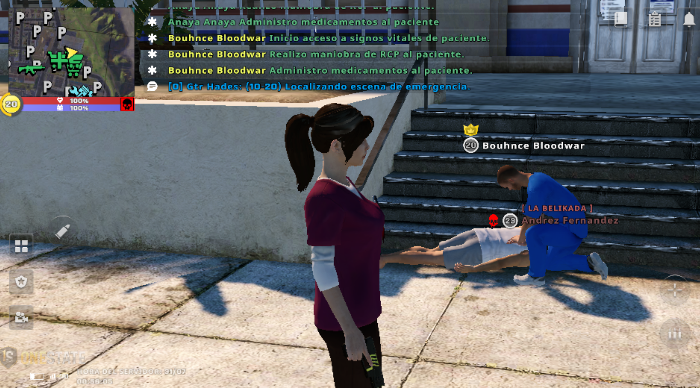
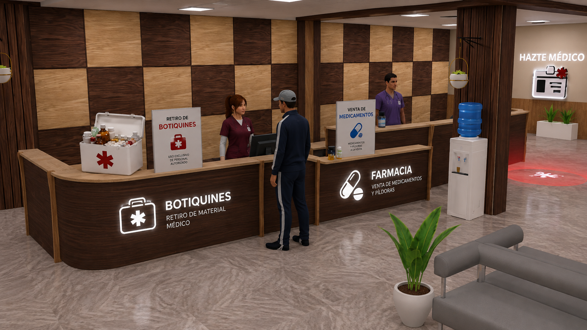

01
🎥 Prácticas RCP
Evidencia de 6 prácticas de RCP entrenando a 3 batas verdes y 3 batas blancas.
Misma pasión · Mayor responsabilidad
🔽 Seguí deslizando

Evidencia de 6 prácticas de RCP entrenando a 3 batas verdes y 3 batas blancas.
Realizar 15 RCP y presentar evidencia de tarea semanal.

Vender 30 píldoras y presentar evidencia de tarea semanal.
Tocá para verlo en grande.
Además de los requisitos de ascenso, cada rango tiene tareas propias dentro de la facción. Cumplirlas es parte del compromiso constante que se pide para mantener la bata.